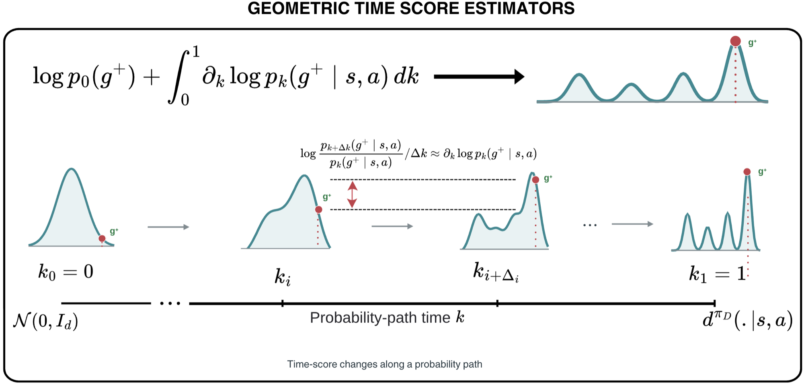

Geometric Time Score Estimators: Bridging Self-Predictive Representations and Generative Occupancy Models for Reinforcement Learning

The time score \(\partial_k \log p_k(g^+ \mid s, a)\) captures the instantaneous rate of change of the log-density of the occupancy measure along a probability path. Integrating it gives accurate occupancy density estimates for downstream control.
Predicting the consequences of actions by reasoning about the future is central to reinforcement learning (RL). While self-predictive representations have been a dominant paradigm for occupancy density estimation, we find that they yield surprisingly poor estimates. On the other hand, generative occupancy models can produce remarkably accurate samples from the occupancy measure. However, such models struggle with occupancy density estimation because they are not explicitly trained to estimate densities. This leaves their expressivity largely untapped for the temporal reasoning that downstream control requires. These complementary limitations raise the question: can occupancy density estimation along probability paths bridge the gap between self-predictive representations and generative occupancy models? In this paper, we explore this question.
Start an agent at state \(s\) and take action \(a\). The occupancy measure is the distribution over the states \(s^+\) it visits in the future:
\[ d^{\pi}(s^+ \mid s,a) = (1-\gamma)\sum_{t=0}^{\infty}\gamma^t\, P(s_{t+1}=s^+ \mid s,a,\pi) \]In goal-conditioned RL, \(d^{\pi}(g \mid s,a)\) equals the Q-value for reaching goal \(g\). Choosing the action that makes \(g\) most likely is choosing the best action, so a good density estimate is a good value estimate. The maze below follows a random-walk policy \(\pi\). Each cell is shaded by \(d^{\pi}(\cdot \mid s,a)\), so darker cells correspond to future states that are more likely. Click a cell to move \(s\), pick \(a\) with the arrows, and move \(\gamma\) to change how far ahead it looks. Hover the cursor over a cell to read its occupancy density.
–
Each panel plots the rank of a method's predicted density against the rank of the ground truth, over 50 goals × 300 state-action pairs. A perfect estimator puts every point on the red diagonal. Colour is the state's distance from the origin, so yellow means far. Click or hover a method to view its predictions.
-
Occupancy modeling along probability paths
- The occupancy measure \(d^{\pi_D}(s^+ \mid s, a)\) is often a complex multimodal distribution. Instead of estimating it directly, we connect a simple base distribution \(p_0 = \mathcal{N}(0, I)\) to \(p_1(\cdot \mid s,a) \equiv d^{\pi_D}(\cdot \mid s,a)\) with a variance-preserving probability path: \[ s_k^+ = \alpha_k s^+ + \sqrt{1-\alpha_k^2}\, s_0^+, \qquad k \sim \mathcal{U}[0,1] \]
- The time score \(\partial_k \log p_k(s^+ \mid s,a)\) is the rate of change of log-density along the path. Integrating it recovers the log occupancy density: \[ \log d^{\pi_D}(s^+ \mid s,a) = \int_0^1 \partial_k \log p_k(s^+ \mid s,a)\, dk + \log p_0(s^+) \]
- Conditioning on the endpoint \(s^+\) gives a closed-form regression target \(\partial_k \log p_k(s_k^+ \mid s^+)\) for a network \(s_\theta(s_k^+, k, s, a)\).
Interactive: the time score along the pathThe log-ratio of the densities at \(g^+\) between \(k_i\) and \(k_i + \Delta k\), divided by \(\Delta k\), approximates the time score (red line). Drag \(k_i\) along the axis and \(g^+\) in any panel to see how it changes along the path.
Interactive: from time score to occupancy densityIntegrating the time score over \(k\) gives the log occupancy density at \(g^+\). Drag \(g^+\) on the left, scrub \(k\) on the right, and change the number of time-score evaluations \(N\) used at inference (grey bars).
-
Geometric Time Score Matching
- GTSE trains a network \(s_\theta(s_k^+, k, s, a)\) to predict the time score at every \(k\) along the path. Monte Carlo targets cannot stitch trajectory segments, so we use the recursive structure of the occupancy measure to bootstrap time-score predictions from the next state-action pair:
\[ \mathcal{L}_{\text{GTSE}}(\theta) = (1-\gamma)\, {\color{#d4883e}\mathcal{L}_{\text{next}}(\theta)} + \gamma\, {\color{#641e16}\mathcal{L}_{\text{future}}(\theta)}, \qquad \forall (s,a,s',a') \in \mathcal{D} \] \[ {\color{#d4883e}\mathcal{L}_{\text{next}}(\theta)} = \mathbb{E}_{k,\, s'_k \mid s'}\Big[\lambda(k)\big(\partial_k \log p_k(s'_k \mid s') - s_\theta(s'_k, k, s, a)\big)^2\Big] \] \[ {\color{#641e16}\mathcal{L}_{\text{future}}(\theta)} = \mathbb{E}_{s^+ \sim d^{\pi_D}(\cdot \mid s',a')}\, \mathbb{E}_{k,\, s^+_k \mid s^+}\Big[\lambda(k)\big(\operatorname{sg}[s_{\bar\theta}(s^+_k, k, s', a')] - s_\theta(s^+_k, k, s, a)\big)^2\Big] \]- Inference with \(N\) time-score evaluations: \(\log \hat{d}^{\pi_D}(s^+ \mid s,a) = \frac{1}{N}\sum_{i=0}^{N-1} s_\theta(s^+, i/N, s, a) + \log p_0(s^+)\).
-
Why it works: Multiscale future prediction
- If we use a bilinear form for the time score, \(\phi(s,a,k)^\top \psi(g,k)\), the time-score integral has an exact Legendre decomposition: \[ \log d^{\pi_D}(g \mid s,a) = \sum_{l=0}^{\infty} \hat{\phi}_l(s,a)^\top \hat{\psi}_l(g) + \log p_0(g) \]
- Truncating at order \(L\) gives rank up to \((L+1)\delta\). Prior self-predictive methods learn rank-\(\delta\) approximations, which are analogous to \(L = 0\).
- GTSE-b and GTSE-b\(_L\): We train GTSE with this bilinear form (GTSE-b) and, at inference, keep only the first \(L\) Legendre terms (GTSE-b\(_L\)). Comparing \(L = 0, 2, 10, \infty\) shows how much capacity the higher-order terms add.
- GTSE-\(r\): Explicit representations. Parameterizing \(s_\theta(g,k,s,a) = \phi_\theta(s,a)^\top \psi_\theta(g,k)\) gives \(\log \hat{d} \propto \phi_\theta(s,a)^\top \bar{\psi}_\theta(g)\): a state-action representation and a goal representation learned along probability paths.
Full table
| CRL | FB | TD-JEPA | BYOL-γ | Dual GR | TMD | TD-flows | GTSE-b₀ | GTSE-b₂ | GTSE-b₁₀ | GTSE-b | GTSE-r | GTSE | |
|---|---|---|---|---|---|---|---|---|---|---|---|---|---|
| ρ (near) | 0.56 | 0.11 | 0.25 | 0.33 | −0.07 | 0.56 | 0.00 | 0.56 | 0.60 | 0.60 | 0.60 | 0.60 | 0.63 |
| ρ (far) | 0.14 | 0.00 | 0.08 | 0.16 | −0.09 | 0.30 | 0.05 | 0.50 | 0.51 | 0.52 | 0.53 | 0.52 | 0.55 |
| Success rate | 3±6 | 0±0 | 0±0 | 0±0 | 0±0 | 0±0 | 0±0 | 12±5 | 21±10 | 19±9 | 25±4 | 25±2 | 38±4 |
Step through \(L\) to watch the far states (yellow) move onto the diagonal, and select GTSE-r to compare.
Full table
| Dataset | GCBC | CRL | FB | TD-JEPA | BYOL-γ | Dual GR | TMD | SMORE | TD-flows | NF | GTSE-r | GTSE |
|---|---|---|---|---|---|---|---|---|---|---|---|---|
| scene-play | 20±4 | 25±5 | 6±2 | 31±4 | 17±2 | 19±15 | 7±2 | 13±4 | 35±4 | 9±3 | 60±5 | 69±6 |
| scene-noisy | 10±1 | 7±3 | 2±1 | 24±3 | 9±3 | 12±7 | 7±1 | 3±2 | 19±4 | 5±2 | 37±4 | 55±6 |
| puzzle-4x4-play | 1±1 | 2±1 | 22±8 | 36±3 | 2±1 | 17±6 | 1±1 | 0±1 | 4±2 | 1±1 | 26±6 | 40±4 |
| puzzle-4x4-noisy | 1±0 | 0±0 | 6±2 | 9±3 | 0±0 | 2±3 | 0±0 | 0±0 | 1±0 | 1±0 | 9±2 | 22±2 |
| cube-triple-play | 5±2 | 2±1 | 1±0 | 1±1 | 0±1 | 13±2 | 1±1 | 2±3 | 16±3 | 0±0 | 7±1 | 18±1 |
| cube-triple-noisy | 2±1 | 1±1 | 0±1 | 0±0 | 0±1 | 4±2 | 0±0 | 1±1 | 8±2 | 1±1 | 4±1 | 8±1 |
| antmaze-large-navigate | 34±4 | 73±6 | 15±8 | 29±6 | 32±5 | 43±6 | 29±4 | 35±3 | 30±9 | 51±16 | 78±4 | 53±4 |
| Mean | 10.4 | 15.7 | 7.4 | 18.6 | 8.6 | 15.7 | 6.4 | 7.7 | 16.1 | 9.7 | 31.6 | 37.9 |
Full table
| Task | CRL | FB | TD-JEPA | BYOL-γ | Dual GR | TMD | Vanilla FQL | GTSE-r |
|---|---|---|---|---|---|---|---|---|
| task 1 | 67±6 | 58±33 | 98±5 | 51±27 | 37±7 | 1±2 | 100±0 | 100±1 |
| task 2 | 14±12 | 17±19 | 32±22 | 8±8 | 4±3 | 0±0 | 83±23 | 81±12 |
| task 3 | 27±13 | 1±2 | 85±11 | 10±6 | 11±9 | 0±0 | 99±3 | 94±5 |
| task 4 | 10±5 | 0±0 | 18±14 | 10±4 | 7±4 | 0±0 | 9±7 | 36±18 |
| task 5 | 2±2 | 0±0 | 0±0 | 0±0 | 4±7 | 0±0 | 0±0 | 0±0 |
| Mean | 24.0 | 15.2 | 46.6 | 15.8 | 12.6 | 0.2 | 58.2 | 62.2 |
If you find this work useful, please cite:
@article{venugopal2026gtse,
title = {Geometric Time Score Estimators: Bridging Self-Predictive
Representations and Generative Occupancy Models
for Reinforcement Learning},
author = {Aravind Venugopal and others},
year = {2026}
}